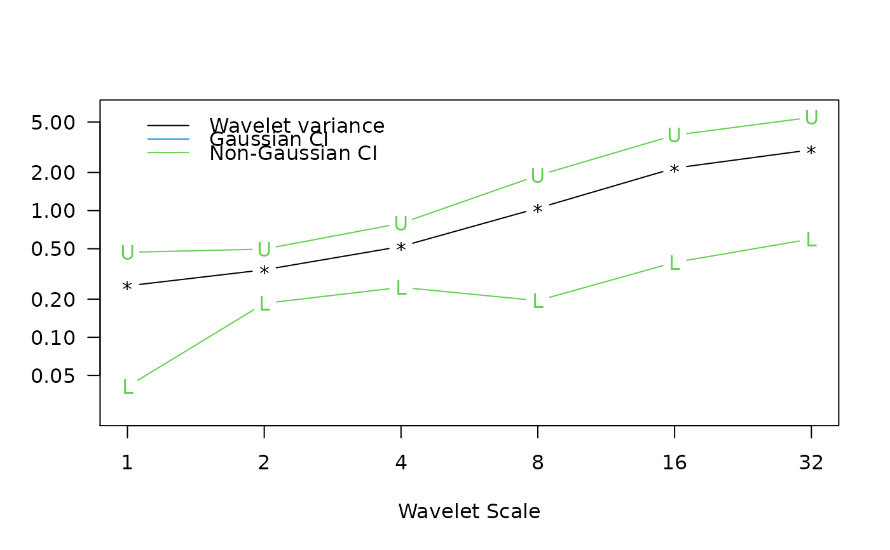
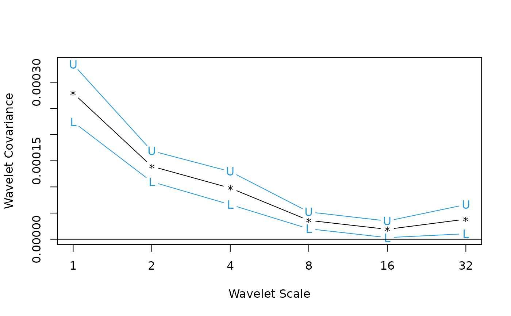
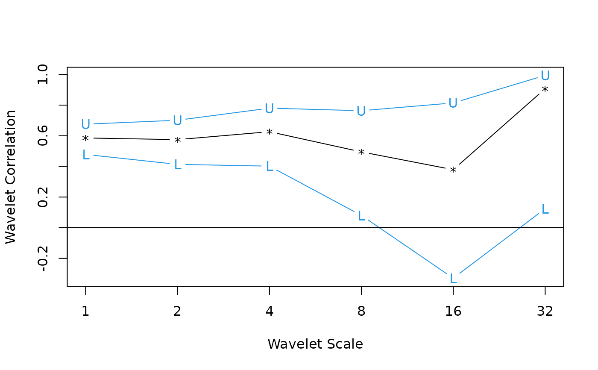

wave.variance.RdProduces an estimate of the multiscale variance, covariance or correlation along with approximate confidence intervals.
wave.variance(x, type="eta3", p=0.025)
wave.covariance(x, y)
wave.correlation(x, y, N, p=0.975)| x | first time series |
|---|---|
| y | second time series |
| type | character string describing confidence interval
calculation; valid methods are |
| p | (one minus the) two-sided p-value for the confidence interval |
| N | length of time series |
Matrix with as many rows as levels in the wavelet transform object. The first column provides the point estimate for the wavelet variance, covariance, or correlation followed by the lower and upper bounds from the confidence interval.
The time-independent wavelet variance is basically the average of the squared wavelet coefficients across each scale. As shown in Percival (1995), the wavelet variance is a scale-by-scale decomposition of the variance for a stationary process, and certain non-stationary processes.
Gencay, R., F. Selcuk and B. Whitcher (2001) An Introduction to Wavelets and Other Filtering Methods in Finance and Economics, Academic Press.
Percival, D. B. (1995) Biometrika, 82, No. 3, 619-631.
Percival, D. B. and A. T. Walden (2000) Wavelet Methods for Time Series Analysis, Cambridge University Press.
Whitcher, B., P. Guttorp and D. B. Percival (2000) Wavelet Analysis of Covariance with Application to Atmospheric Time Series, Journal of Geophysical Research, 105, No. D11, 14,941-14,962.
B. Whitcher
## Figure 7.3 from Gencay, Selcuk and Whitcher (2001)
data(ar1)
ar1.modwt <- modwt(ar1, "haar", 6)
ar1.modwt.bw <- brick.wall(ar1.modwt, "haar")
ar1.modwt.var2 <- wave.variance(ar1.modwt.bw, type="gaussian")
ar1.modwt.var <- wave.variance(ar1.modwt.bw, type="nongaussian")
par(mfrow=c(1,1), las=1, mar=c(5,4,4,2)+.1)
matplot(2^(0:5), ar1.modwt.var2[-7,], type="b", log="xy",
xaxt="n", ylim=c(.025, 6), pch="*LU", lty=1, col=c(1,4,4),
xlab="Wavelet Scale", ylab="")
matlines(2^(0:5), as.matrix(ar1.modwt.var)[-7,2:3], type="b",
pch="LU", lty=1, col=3)
axis(side=1, at=2^(0:5))
legend(1, 6, c("Wavelet variance", "Gaussian CI", "Non-Gaussian CI"),
lty=1, col=c(1,4,3), bty="n")

## Figure 7.8 from Gencay, Selcuk and Whitcher (2001)
data(exchange)
returns <- diff(log(as.matrix(exchange)))
returns <- ts(returns, start=1970, freq=12)
wf <- "d4"
J <- 6
demusd.modwt <- modwt(returns[,"DEM.USD"], wf, J)
demusd.modwt.bw <- brick.wall(demusd.modwt, wf)
jpyusd.modwt <- modwt(returns[,"JPY.USD"], wf, J)
jpyusd.modwt.bw <- brick.wall(jpyusd.modwt, wf)
returns.modwt.cov <- wave.covariance(demusd.modwt.bw, jpyusd.modwt.bw)
par(mfrow=c(1,1), las=0, mar=c(5,4,4,2)+.1)
matplot(2^(0:(J-1)), returns.modwt.cov[-(J+1),], type="b", log="x",
pch="*LU", xaxt="n", lty=1, col=c(1,4,4), xlab="Wavelet Scale",
ylab="Wavelet Covariance")
axis(side=1, at=2^(0:7))
abline(h=0)

returns.modwt.cor <- wave.correlation(demusd.modwt.bw, jpyusd.modwt.bw,
N = dim(returns)[1])
#> Warning: NaNs produced
#> Warning: NaNs produced
par(mfrow=c(1,1), las=0, mar=c(5,4,4,2)+.1)
matplot(2^(0:(J-1)), returns.modwt.cor[-(J+1),], type="b", log="x",
pch="*LU", xaxt="n", lty=1, col=c(1,4,4), xlab="Wavelet Scale",
ylab="Wavelet Correlation")
axis(side=1, at=2^(0:7))
abline(h=0)
